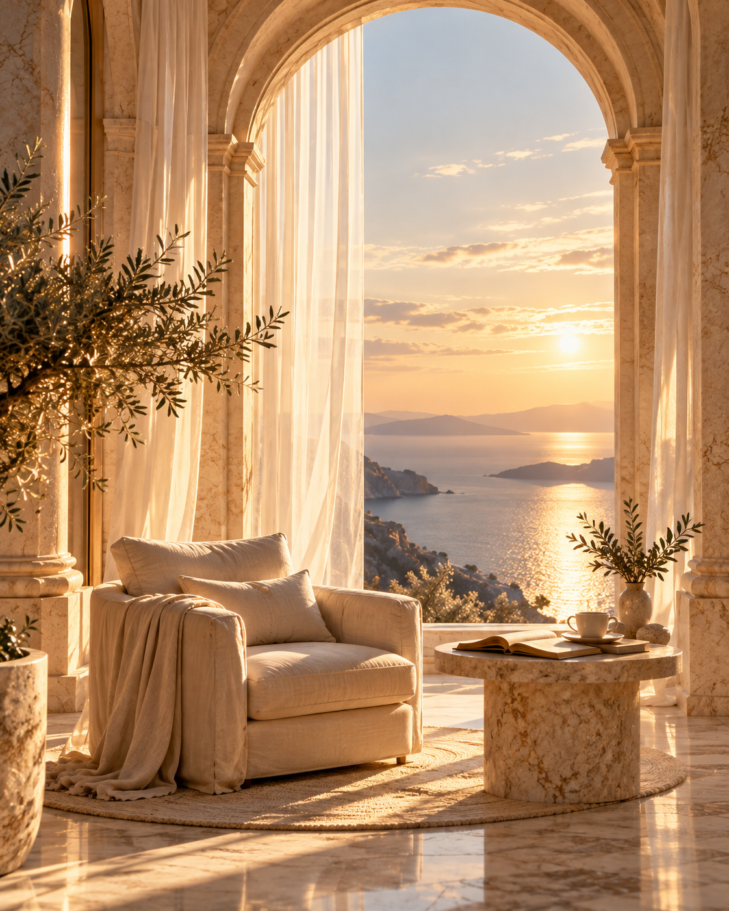
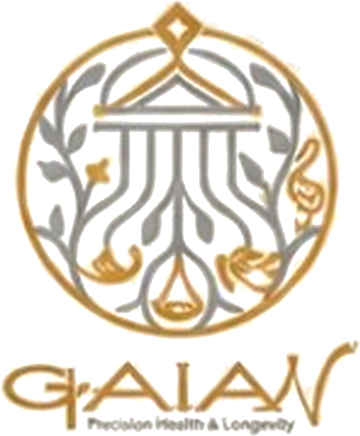

GAIA
初心與研發的根基
持續投入草本研發，
以守護地球與人類健康為使命。
About GAIAN
從草本研發到醫療場域，始終不變的，
是對品質的堅持，以及對每一位來訪者的重視。
Our Story
GAIA 的起點，是對自然、肌膚與生活環境的關心。多年來，我們深耕草本研發，對原料、配方與品質始終有所堅持。
GAIAN = GAIA + N（Nature）
「N」代表 Nature，象徵自然與永續，承載我們對大地的尊重，以及人與自然和諧共生的信念。
GAIAN 延續這份初心，匯集中西醫專業，以預防醫學為核心，結合藝術與空間美學，讓品牌理念融入空間與服務，呈現視覺的饗宴與尊榮的體驗。
GAIA 是初心與根，
GAIAN 是從這份根基，
向外生長的健康與美的未來。

Our Belief
讓預防醫學走進生活
以專業守護健康
以美學豐富人生
GAIA × GAIAN
初心與研發的根基
持續投入草本研發，
以守護地球與人類健康為使命。

健康與美的實踐場域
以醫療服務、健康管理與藝術交流，
連結專業與日常需求。
Our Spaces
草本保養・生活美學・品牌體驗
認識草本保養與生活選品，透過細緻介紹，找到適合您的保養選擇。
健康・美學・藝術・生活
匯集醫療專業、藝術珍藏與空間設計，以尊榮服務與周全的隱私安排，迎接每一位貴賓。
預防醫學・中西醫調理・非侵入醫美
由中西醫團隊提供評估與診療，依需求安排健康管理、身體調理及醫美項目。
How It Becomes Real
從研發選材到服務細節，我們堅守品質、重視體驗，
並將節能減碳、珍惜資源落實於日常營運。
Philosophy
您的身體不適與困擾，都值得被用心傾聽。
我們用心了解您的感受，
與您討論適合的診療方向。
留意日常容易忽略的身體變化，透過定期檢測評估，讓預防融入生活。
您在意什麼、希望改善什麼，都是規劃的重要起點；建議也應考量您的生活安排與個人選擇。
除了檢測數據，也了解睡眠、壓力、飲食與活動，讓評估涵蓋診間之外的日常。
兼顧身體狀態與美學期待，討論調理與醫美方向，也珍視您原有的特質與風格。
Worldview
以醫學依據說明建議、適用條件與選擇，讓您充分了解後，再作決定。
從預約到諮詢，妥善處理個人資訊，重視會面空間的私密性與接待分寸。
依身體需求、生活方式與目標擬定計畫，並參考後續數據及實際感受調整。
以光影與藝術呈現視覺的饗宴，從座席、動線到接待細節，營造舒適的來訪體驗。
Vision
以成為預防醫學、整合醫學、與健康管理的指標品牌為願景。
我們期許 GAIAN 成為值得長期信任的健康夥伴，讓每一位貴賓都能更了解自己的身體，對健康的選擇更有把握。